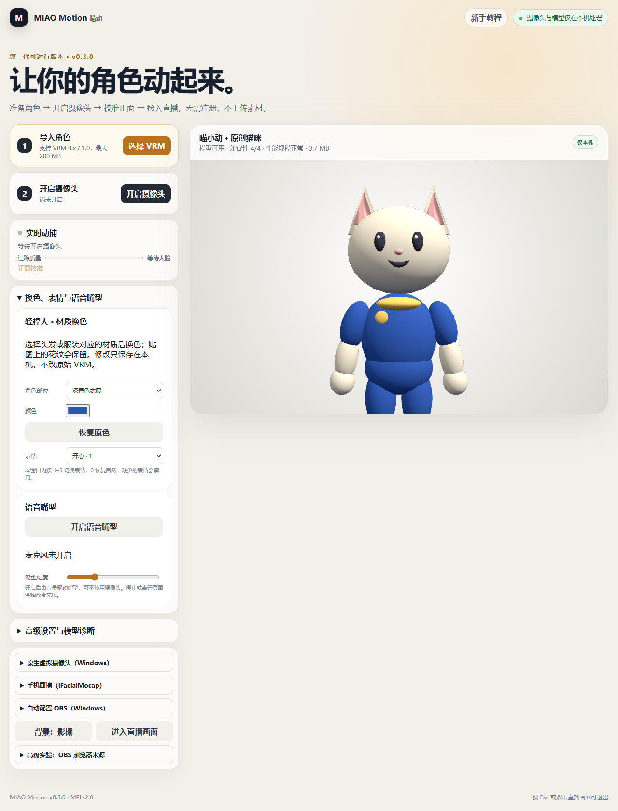

换色、捏人、语音与更多输入输出
先试原创猫咪
首页点“用喵小动”，或在新手教程第二步点“使用原创猫咪 · 喵小动”，等“正在准备画面…”结束后开始操作。也可导入自己的 VRM，或使用随包的 pixiv 技术示例。

捏人、换色和表情
展开“换色、表情与语音嘴型”。
- 所有角色都能换色：选择材质（如毛发、衣服），点颜色框；“恢复原色”随时还原。颜色按角色保存在本机，不改动原始 VRM 文件。贴图上的花纹会保留，纯黑贴图不能只靠染色变白。
- 新版喵小动还能换耳朵（尖/圆）、尾巴（长/短）、发型（小发簇/清爽）、衣服（徽章上衣/连帽上衣），起名字，然后点“导出我的角色 VRM”保存成文件。导出的文件保留骨骼和表情，可以在喵动或其他支持 VRM 的软件里再导入。
- 导出角色的名字是你起的名字；作者仍为喵动项目，许可为 VRM 公共许可（任何人可使用、商用、修改再分发）。详见 喵小动使用说明。
- 其他 VRM 角色只能换色，换部件请回到建模软件（如 VRoid Studio）修改。
表情下拉框支持自然、开心、生气、难过、放松和惊讶；在喵动窗口内按 0–5 切换。输入框和弹窗中不会触发表情热键。这不是系统全局热键，模型缺少的表情会禁用。
只用麦克风也能动
点“开启语音嘴型”并允许麦克风权限。讲话音量控制张嘴幅度，可用滑块调节；不录音、不回放、不上传。关闭按钮、离开页面或关闭应用会释放麦克风。语音嘴型优先于摄像头和手机嘴型；面部表情仍可叠加。直播软件里的麦克风仍需单独选择。
镜像方向
“镜像动作”默认开启，像照镜子：你闭左眼、向左看、举左手、向左转头，角色都出现在你看来的左侧（角色自身的右侧）。关闭镜像后，角色用自身的同侧。脸、眼神、头部、身体和手都遵循同一规则，上下方向不变。设置位置：高级设置与模型诊断 → 动捕设置 → 镜像动作。
身体和手部（实验）
开启摄像头后，在高级设置勾选“身体与手部”。使用打包在本机的 MediaPipe 模型，识别四肢方向及有骨骼支持的手指。识别在后台单独运行，不会卡住角色画面；负载高时自动降低识别频率。低配电脑的总 CPU 占用仍可能较高，可关闭身体追踪。请保持肩、手、腿入镜；遮挡或单摄像头深度估计不准会影响动作。喵小动是猫爪造型，没有独立手指。
自动画质和更新
画质选“自动调整”后，会每 5 秒统计一次帧率，连续低帧率时降低渲染清晰度，持续流畅后缓慢恢复；不会更改输出比例。“检查新版本”仅在点击时访问 GitHub，不会自动安装更新。
自动配置 OBS
- 在 OBS 的“工具 → WebSocket 服务器设置”启用服务器，端口用 4455，复制服务器密码。
- 在喵动加载角色后，展开“自动配置 OBS（Windows）”，填入密码并点击“创建绿幕场景”。密码只用于本次连接，不会保存。
- 喵动进入绿幕模式，OBS 新增场景“喵动 · 绿幕角色”（已有同名场景时自动加序号），里面有窗口捕获和绿色抠像。回到 OBS 选择这个场景预览，检查取景后再开播。
不会替你开始推流，也不会修改原有场景。配置中途失败时，会删除本次新建的来源与场景；连接断开导致无法清理时，会列出需要你手动删除的场景名。窗口最小化和 OBS 权限差异可能影响捕获。
原生虚拟摄像头（实验）
- 使用 Windows 安装版，加载角色。
- 展开“原生虚拟摄像头（Windows）”，第一次点“安装摄像头组件”，在 Windows 管理员确认中点“是”。
- 点“开始虚拟摄像头输出”。先开始输出，再去接收软件选择摄像头。
- 在会议或直播软件的摄像头列表选择 MIAO Motion Camera。没有出现或画面不动时，在接收软件里重新选择一次摄像头，或重开接收软件。
- 结束时点“停止虚拟摄像头输出”。
当前输出 640×360、最多 15 帧/秒，只传角色画面、保持比例、没有透明背景。组件是 64 位 DirectShow 摄像头，存放在受保护的 Program Files 目录；不保证 Windows“相机”等 UWP 应用或 32 位软件能识别，这时请用 OBS 虚拟摄像头中转。安装组件与打开实体摄像头是两件独立的事；平时开始/停止输出不需要管理员。
卸载与升级
- 卸载喵动时会请求管理员确认来注销组件。如果点了“否”或没有管理员密码，程序会询问“是否仍然卸载喵动”：可以继续卸载。组件会留在受保护目录，不影响安全；以后可重新安装喵动，在“卸载摄像头组件”里清理，或请管理员清理。其他 Windows 用户安装的组件不会阻止你卸载。
- 从 v0.3.1-beta 起升级，已安装的组件会自动恢复（会弹一次管理员确认）。
- v0.3.0-beta 的组件存在安全隐患。从 v0.3.0-beta 升级时，程序会把旧组件迁移到受保护目录；如果提示迁移失败，或启动时提示检测到旧版组件，请在“原生虚拟摄像头（Windows）”里点“卸载摄像头组件”清理。
手机面捕（实验，仅安装版）
你需要：带 Face ID（原深感摄像头） 的 iPhone 或 iPad，和付费 iOS App iFacialMocap（价格以 App Store 为准）。安卓手机和没有 Face ID 的设备不能用；安卓用户直接用电脑摄像头动捕即可，不推荐安装未经验证的第三方 App。便携版不支持手机面捕。
- 手机和电脑连接同一个 Wi-Fi（电脑用网线接同一个路由器也可以）。
- 把 Windows 当前网络设为“专用网络”：设置 → 网络和 Internet → 点当前连接的网络 → “网络配置文件类型”选“专用网络”。
- 在 iPhone/iPad 打开 iFacialMocap，保持 App 在前台、屏幕不锁定。App 界面上方会显示手机的 IP 地址（类似 192.168.1.20）。
- 在喵动安装版展开“手机面捕（iFacialMocap）”，填入这个 IP，点“连接手机面捕”。
- 第一次连接时 Windows 可能弹出防火墙提示，勾选“专用网络”并点“允许”。
- 看到“正在接收手机面捕”后自然转头、眨眼、微笑。点“停止手机面捕”会关闭接收端口。
连接后程序每 2 秒自动重发一次连接请求；5 秒还没收到数据会提示你排查。只接收你填写的那台手机的动作参数，不传视频，不经过云服务。
连不上怎么办
| 检查 | 怎么做 |
|---|
| 是不是同一个 Wi-Fi | 手机不要用流量，电脑和手机连同一个路由器。双频路由器的 2.4G/5G 通常互通，不通时换成同一个。 |
| 路由器拦截 | “访客网络”和“AP 隔离/无线隔离”会阻止设备互相连接。改连主网络，或在路由器设置里关闭 AP 隔离。公司、学校、酒店 Wi-Fi 常有此限制，也可尝试用手机开热点给电脑连接（此时 IP 以 App 显示为准，同样要把这个网络设为专用网络）。 |
| Windows 网络类型 | 设置 → 网络和 Internet → 当前网络 → 网络配置文件类型 → 专用网络。 |
| 防火墙点过“取消” | Windows 安全中心 → 防火墙和网络保护 → 允许应用通过防火墙 → 点“更改设置” → 找到喵动（MIAO Motion），勾选“专用” → 确定。这一步需要管理员权限。第三方安全软件也可能拦截，需要在其中放行。 |
| App 不在前台 | iFacialMocap 必须在前台运行，手机不能锁屏或切到别的 App。 |
| IP 填错 | 填手机 App 上显示的 IP，不是电脑的 IP；手机重连 Wi-Fi 后 IP 可能变化。 |
此接入目前只支持 iFacialMocap 的协议，不支持 VMC、Live Link 或手机网页相机。具体机型尚待更多真机验证。
返回喵动 · 下载与校验 · 按平台接入